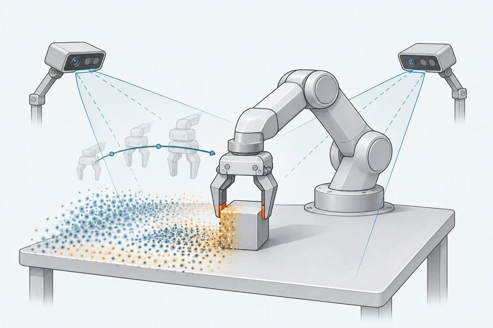

KineTeach：跨本体示教回放与训练数据生成 KineTeach: demonstration replay and training data across robot embodiments
参与 KineTeach 跨本体示教数据生成研究，负责真实示教采集、三维资产构建和场景渲染，并参与轨迹增强与运动学重定向，生成用于模仿学习的视觉、状态和动作数据。Contributed to KineTeach through real-world demonstration capture, 3D asset construction and scene rendering, with additional contributions to trajectory augmentation and kinematic retargeting. The workflow generates visual observations, states and actions for imitation learning.

同一时刻如何得到两幅对应的 RGB-D 图像？How does one instant yield two matching RGB-D views?
确定这一帧的物体位姿Place the object for this frame
在真实示教视频里取一个时刻。SAM 2 给出物体在图像中的区域，FoundationPose 跟踪它的三维位置与朝向。相机外参把这个位姿转换到场景坐标系，使物体的位置能够与机器人轨迹对应。Take one instant in the real demonstration. SAM 2 identifies the object in the image, and FoundationPose tracks its 3D position and orientation. Camera extrinsics place that pose in the scene frame used for the robot trajectory.
放置目标机器人的各个连杆Pose the target robot
重定向后的关节角描述目标机器人在该时刻的构型。依据 URDF 定义的关节关系，通过正运动学更新各连杆位姿，再与同一时刻的物体位姿组合，得到可供渲染的完整场景。Retargeted joint angles specify the target robot’s configuration at that instant. Forward kinematics uses the joint relationships in its URDF to place the links. Combining these with the object pose for the same instant gives a scene ready to render.
保留场景，更换观察位置Hold the scene fixed and change the camera
固定相机从工作空间外观察，腕部相机随末端移动。两个视角渲染同一份场景状态，因此画面中的遮挡和尺度可以不同，却仍可与同一个机器人状态和动作配对。The fixed camera looks over the workspace, while the wrist camera follows the end effector. Both render the same scene state. Occlusion and apparent scale can differ across the two images while both remain paired with the same robot state and action.
真实示教采集与位姿跟踪Real-world demonstrations and object pose tracking
采集真实操作示教，使用 SAM 2 分割操作物体，并通过 FoundationPose 跟踪六自由度位姿。结合相机外参与机器人运动学，将物体位姿和示教轨迹转换到统一坐标系，为轨迹重定向与场景回放提供空间基准。Real-world demonstrations are processed with SAM 2 for object segmentation and FoundationPose for six-degree-of-freedom pose tracking. Camera extrinsics and robot kinematics transform object poses and demonstration trajectories into a common frame for retargeting and scene replay.
跨本体重定向与 MuJoCo 数据生成Cross-embodiment retargeting and MuJoCo data generation
运动学重定向将示教动作映射至目标机器人的关节结构。MuJoCo 结合三维网格资产回放增强和重定向后的轨迹，沿各时间步生成视觉观测与语义标注，并关联对应的机器人状态和动作，形成用于模仿学习的训练序列。Kinematic retargeting maps demonstrated motion to the target robot’s joint structure. MuJoCo replays the augmented and retargeted trajectories with 3D mesh assets. Visual observations and semantic labels at each step are paired with robot states and actions to form training sequences for imitation learning.
多视角采样与三维高斯表示Multi-view sampling and 3D Gaussian scene representation
三维高斯泼溅（3D Gaussian Splatting）分支在 SAPIEN 中采集多视角数据，并整理机器人连杆、夹爪、物体与背景的材质及 UV 坐标。逐帧回放时，根据 URDF 中的运动学模型和关节角计算各连杆位姿，并读取 FoundationPose 在同一时刻跟踪到的物体位姿。The 3D Gaussian Splatting workflow samples multiple views in SAPIEN and prepares mesh formats, materials and UV coordinates for robot links, grippers, objects and backgrounds. During replay, forward kinematics from the URDF supplies the robot link poses, while FoundationPose supplies the object poses for the corresponding demonstration frame.
固定与腕部视角的 RGB-D 渲染RGB-D rendering from fixed and wrist-mounted cameras
开发固定相机与腕部相机的批量 RGB-D 渲染流程，沿同一示教轨迹生成全局工作空间与末端局部视角的观测。渲染支持颜色和场景位置扰动，输出图像与机器人状态、动作配对，并可转换为 LeRobot 格式。Batch RGB-D rendering produces workspace and end-effector views from fixed and wrist-mounted cameras along the same demonstration trajectory. Colour and scene-placement variations augment the rendered observations, which are paired with robot states and actions and can be exported in LeRobot format.